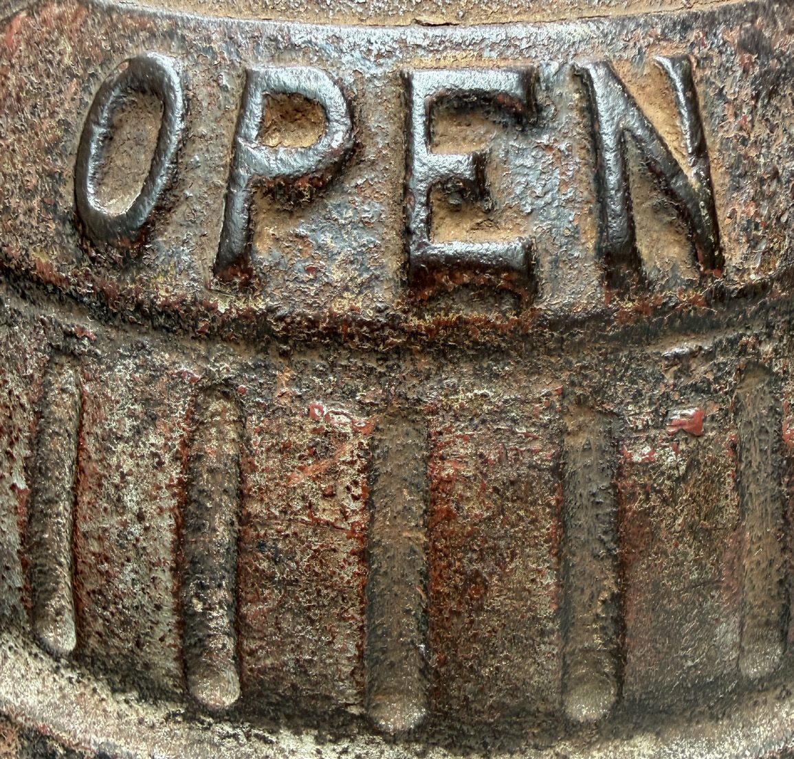
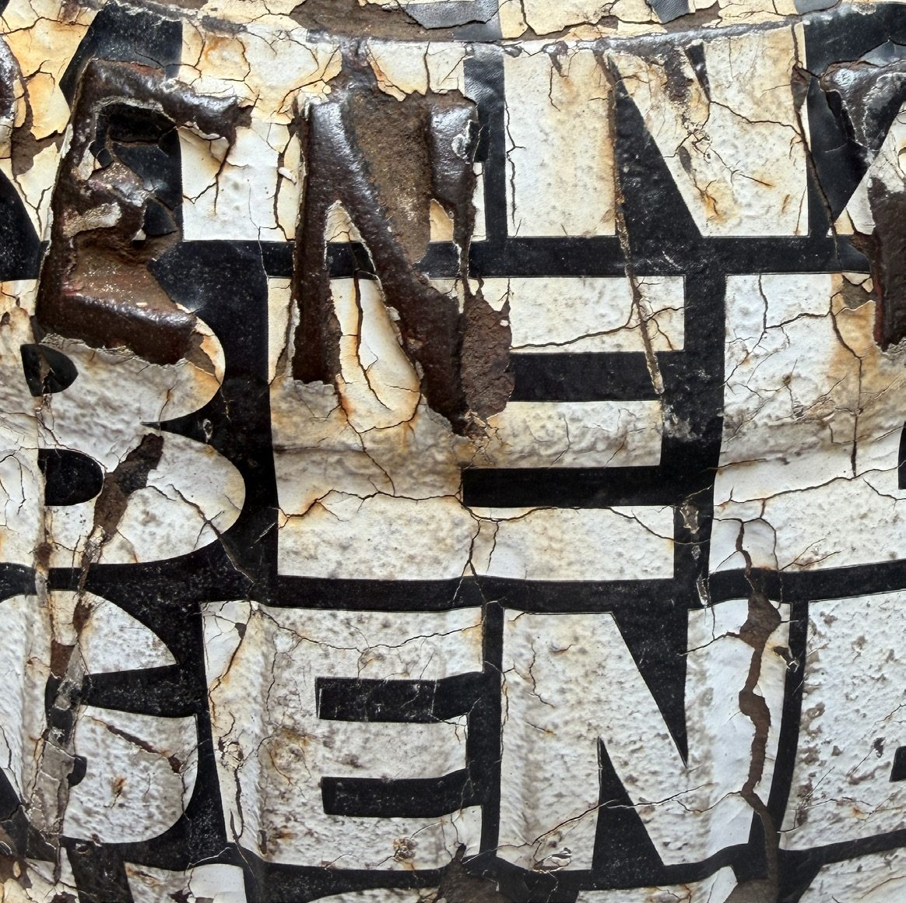
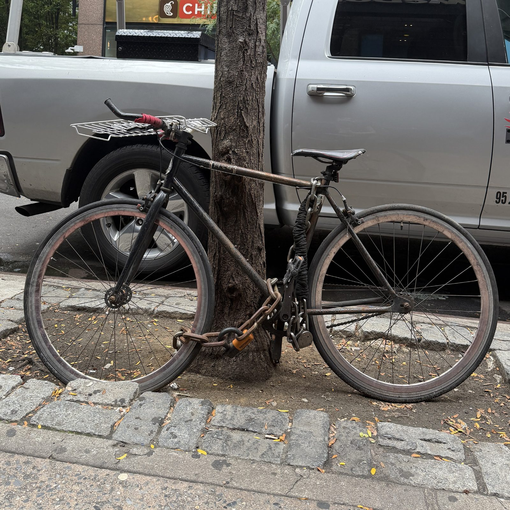

How to make a strong password, and what a password manager actually does.
The more sensitive the information, the stronger your password needs to be. By sensitive, we mean the personal or financial information scammers may want to steal such as your credit card, bank account, or social security number. Your medical files are also considered sensitive.
For any accounts online with this kind of information, you need a strong password that is difficult for a scammer to crack.
Experts used to recommend using a complicated password so it would be harder for hackers to guess. Today, your chances of staying safe are higher when you make your password longer.
You may know that you should combine letters, numbers, and symbols to make your password more complicated. But to make it easier for you to remember and, at the same time, harder for hackers to guess, we recommend using a meaningful phrase that substitutes letters with numbers and symbols, like one of these examples:
Type a password below and watch the four checks answer.
Nothing is sent anywhere. This runs inside your own browser, and is forgotten the moment you close the page.
You may want to write it down and keep it somewhere out of sight, in case you forget what you have chosen to use as your phrase.
Choose words like the ones carved into the city on the right, and randomize them.


Most people reuse the same handful of passwords across dozens of accounts, which means one data breach can unlock everything from your email to your bank account. A password manager solves this by remembering all your unique passwords for you, and setting one up is actually much simpler than juggling sticky notes or spreadsheets.
Most people use the same password for everything, and hackers know it. In fact, 81% of data breaches happen because of weak or reused passwords. That is a scary number when you think about how much of your life is online. Your email, bank account, medical records, and social media all sit behind passwords that might not be as strong as you think.
Most apps ask for a username and password to log in. If you cannot remember your password, tap “Forgot password?” to reset it by email or text. Checking “Remember me” lets the app save your login, so you will not need to type it in again next time.
This is your personal account — the “you” the app or website recognizes once you are logged in.
This shows that your device is connected to other people or systems, like sharing information safely between your account and others online.
This means you can unlock or log in using your fingerprint instead of typing a password.
This means the connection reaches the internet — your information is traveling online.
Password managers use something called encryption, which is like putting your passwords in a safe that only you have the combination to. Even the company that makes the password manager cannot see what is inside your vault. Your master password is the only key that unlocks everything.

A lot of people worry about putting all their eggs in one basket. What if someone gets your master password? What if the password manager company gets hacked? These are fair questions, but the reality is that password managers are much safer than the alternatives most people use.
The truth is that using weak passwords, or the same password everywhere, is far riskier than using a password manager. Hackers have automated tools that can try millions of password combinations in minutes.
If someone gets my master password, they have everything.
MythMost password managers have extra security, like two-factor authentication.
RealityPassword managers are too complicated for seniors.
MythModern password managers are designed to be simple and user-friendly.
RealityThey are expensive and not worth it.
MythMany good options are free or very affordable.
Reality